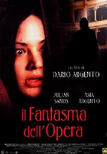

Contents | Features | Reviews | News | Archives | Store

Contents | Features | Reviews | News | Archives | Store
The Phantom of the Opera
Review by
Sean Axmaker
Posted 5 November 1999
|  |
Directed
by Dario Argento Starring
Julian
Sands, Written
by Gerard Brach and Dario Argento, |
Dario
Argento made his name as the heir apparent of Italian giallo (a genre of stylish slasher pictures) master Mario Bava,
delivering murder as spectacle with razor-sharp execution. Combining
Hitchcockian camerawork, lush, over-saturated colors, rollercoaster-like
thrills, and at time surreal situations, he could overcome the sadism and
misogyny in his gallery of sliced and diced beauties with the sheer cinematic
bravura and beauty of the sequences. In his best films Argento lifted the
slasher film from the mire of villain-as-hero exploitation in Friday
the 13th films and the like and turned it into violent, bloody
poetry.
Those
films seem a long time gone and the nineties have seen Argento try to be more
than Italy’s giallo Hitchcock. The
results have been… mixed at best and on the downward slide. The
Stendahl Syndrome, a 1996 psycho-thriller about a detective who goes,
literally, mad while tracking a serial killer contains some of his most
astounding cinematic adventures as art, reality, and dream bleed together and
the young detective becomes an Alice through the looking glass of her
nightmares. Yet Argento succumbs to the worst of his cinematic sadism and puts
that detective (unconvincingly played by his lovely daughter Asia) through an
ordeal of sheer brutality and she becomes the center of a spectacle of mental
torture and physical rape. It leaves a bad taste in the mouth that only turns
more sour when you realize that it’s his own daughter he’s torturing for all
to see onscreen.
Asia
also stars in his latest film, his second go at Phantom of the Opera (his first, Opera -- aka Terror at the
Opera -- took the idea and turned it into a pure giallo tale of a murderous madman making a spectacle of his
victims). If The Stendahl Syndrome
pushed the giallo to mind-game
extremes, this Phantom (more faithful
to the book than his previous, if only by contrast) is Argento playing it
straighter… sort of. This Phantom is a dashing, darkly handsome character with
long blonde hair, black eyes and a smooth face. Julian Sands, a Phantom who
doesn’t hide behind a mask, is more than a simply a cellar dweller: he’s
King Rat, a man raised by rodents after a maternal mama rat drags the infant
phantom from a floating basket in the Paris Sewers (the scene is supposed to
suggest Moses, but the sheer silliness of the entire sequence evokes the birth
of the Penguin in Batman Returns). As
he haunts the basements and hunts the humans that venture below (the first
attack leaves a gushing stump where a plumer once hung from a pulley rope),
upstairs a lovely young ingenue, Christina (Asia Argento), plays understudy to a
tyrannical diva. The Phantom, who telepathically whispers sweets nothings to his
lady love, decides to turn Christine into a star and begins his insidious
campaign to… well, you know the story.
What
you don’t know is the sheer weirdness Argento has injected into it: a slovenly
rat catcher who pickles a memento from every rodent dead at his hands, a
clockwork brass go-cart that sucks, snatches and slices up the skittering vermin
(a bizarre contraption that could have emerged from a twisted Dr.
Phibes sequel), an Opera House manager with a creepy, not-too-secret sexual
attraction to the pre-adolescent girls taking lessons in ballet and voice.
Argento goes to town with such visions as the Phantom’s day-dream of
squirming, cherub-like naked humans caught in a monstrous rat trap and a
sidetrip to a Fellini-esque spa of fleshy decadence (where Christina’s other
love interest, a young Italian noble of high flown romantic fantasies, flees to
drown his sorrows). This Phantom turns
into a veritable Beauty and the Beast, complete with love scene (how Daddy Dario
can photograph his naked daughter in simulated copulation is beyond me) and
tortured romantic tragedy, set in a grandiose, astoundingly beautiful, opera
hall (the Budapest Opera House, standing in for Paris) where Degas sketches the
little girls and young students running around the edges of the drama. And of
course Argento spices it all with a few gory deaths.
By
the time Argento works up to the climax (a dramatic and stylistic
disappointment) the film is deep in an identity crisis: it doesn’t know if
it’s a horror film, a love story, a tragic drama, or a spectacle, and it tries
to go all directions at once. The result isn’t so much a mess as a morass,
with a schizophrenic love story that bounces all over the push-me pull-you drama
and splashes of gore that haven’t the invention, the horror, nor the poetry of
his early work. What’s left is an incredibly handsome film (Argento makes the
most of his Budapest locations and the film swims in rich colors and magnificent
settings, courtesy Ronnie Taylor’s lush cinematography) where shrieking
characters rattle through a story that tears itself apart in conflicting
directions.
Argento’s
horror masterpieces never worked for their stories --his best films throw
narrative construction to the wind as surreal rollercoaster rides and
nightmarish fairy tales cascade in dream logic and sheer cinematic momentum --
so this sudden attempt to mute his baroque style for a mainstream story of
tragic romance and high drama loses his assets while floundering on his
deficiencies. I guess every aging artist wants to move on to create
“meaningful” works of emotion and intellect (just look at Wes Craven doing
the art thing with Music of the Heart),
but Argento is simply no storyteller. Go back to dream weaving and
choreographing fantastic nightmares, and leave the tragedy to someone who
creates emotional dramas instead of gory spectacles.
Contents | Features | Reviews
| News | Archives | Store
Copyright © 1999 by Nitrate Productions, Inc. All Rights Reserved.